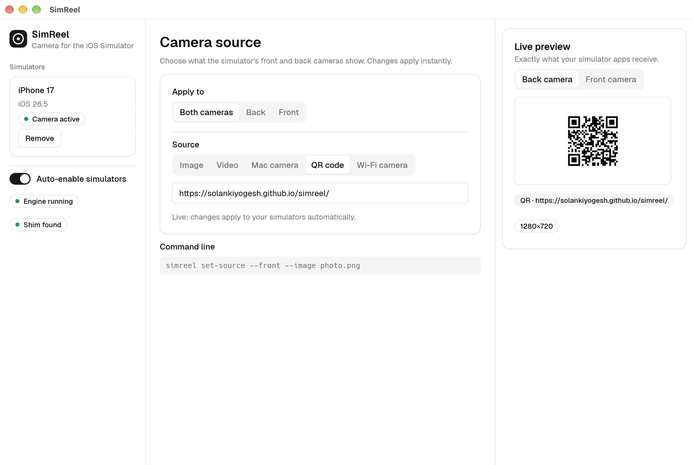

A working camera for the iOS Simulator
SimReel feeds any image, video, QR code or your Mac’s webcam to the front and back cameras of your simulators — with no changes to your app.
Free · macOS 14+ on Apple Silicon

The iOS Simulator has no camera. Now it does.
Anything that opens a capture session — barcode scanners, document and ID capture, profile photos, video calls, onboarding flows — shows a blank screen or an error in the Simulator, so camera changes end up tested on a physical device. SimReel puts a camera back, and you decide what it sees.
Everything you need to test camera features
Built as a small native app, with the controls developers actually reach for.
Front and back cameras
Show a QR code on one camera and a video on the other. Each camera has its own source.
Image, video, QR or webcam
PNG and JPEG images, MP4/MOV video (looped, rotation-aware), any QR text or URL, or your Mac camera.
Your phone as a camera
Scan a QR code and stream your phone’s camera over Wi-Fi. No app to install — it runs in the phone’s browser.
Portrait and landscape
Portrait photos, videos and phone streams stay portrait instead of being cropped.
Fill or fit
Crop to fill the frame, or letterbox with 0–30 % padding and a background colour of your choice.
Live preview, instant apply
See exactly what your app receives. Changes reach your simulators as you make them — no Apply button.
Zero setup per simulator
SimReel enables itself on every booted simulator, including ones you boot later, and cleans up when you quit.
Works with unmodified apps
Preview layers, video frame callbacks, photo capture and QR scanning behave like a real camera. No SDK, no code changes.
Lives in the menu bar
A menu bar icon shows when SimReel is active, with status, a Wi-Fi camera switch and Quit. Close the window and it keeps running.
Scriptable
A simreel command-line tool sets sources from scripts and UI-test setup.
Private by design
Runs on your Mac. No outgoing connections, no telemetry, no account. The phone listener is off until you turn it on.
How it works
Three steps from download to a working simulator camera.
Open SimReel
Your booted simulators appear in the window and are enabled automatically.
Run your app
Launch your app in the Simulator and open its camera screen. Relaunch apps that were already running.
Pick a source
Choose an image, video, QR code or your Mac camera. The app sees it immediately.
Supported camera APIs
SimReel answers the AVFoundation capture APIs your app already uses.
| API | Status |
|---|---|
AVCaptureDevice discovery | Supported — front and back wide-angle cameras |
AVCaptureSession and AVCaptureDeviceInput | Supported |
AVCaptureVideoPreviewLayer | Supported, honours videoGravity |
AVCaptureVideoDataOutput | Supported — BGRA and NV12, 1280×720 (or 720×1280) at up to 30 fps |
AVCaptureMetadataOutput | QR codes verified; other barcode types best-effort |
AVCapturePhotoOutput | Supported — JPEG at the frame size |
| Flash, torch, zoom, focus, exposure | Accepted and ignored |
AVCaptureMovieFileOutput, depth data, Live Photos, ARKit | Not supported |
Works with the camera libraries you already use
SimReel works at the AVFoundation layer that iOS camera code is built on, so apps and libraries that capture through the supported APIs see a working camera — no code changes. It is verified with a native AVFoundation sample app; the libraries below sit on the same APIs but have not been individually tested yet. See what each one builds on, and tell us how yours behaves.
React Native & Expo
react-native-vision-camera, expo-camera, react-native-camera-kit, react-native-camera, react-native-qrcode-scanner, react-native-webrtc
Swift & Objective-C
AVFoundation, Vision, Google ML Kit, BarcodeScanner, CodeScanner, SwiftyCam, CameraManager, YPImagePicker, GPUImage, WebRTC SDKs (Twilio, Agora, Stream, LiveKit, Daily, Jitsi)
Flutter
camera, mobile_scanner, camerawesome, qr_code_scanner, barcode_scan2, google_mlkit_*, flutter_webrtc, agora_rtc_engine, livekit_client
What to watch for: video recording through AVCaptureMovieFileOutput, libraries that read device formats (AVCaptureDevice.formats), libraries that deliberately skip the camera in the Simulator, system camera screens (UIImagePickerController) and ARKit are not covered yet.
Platform support
SimReel is a macOS app for the iOS Simulator.
| Area | Support |
|---|---|
| Host Mac | macOS 14 (Sonoma) or later on Apple Silicon (M1 and newer). Intel Macs are not supported yet. |
| Required tools | Xcode with the iOS Simulator (SimReel uses xcrun simctl). |
| Simulators | iOS Simulator on Apple Silicon — iPhone and iPad runtimes. |
| Apps | Native iOS apps (Swift, Objective-C) using AVFoundation capture APIs. |
| Phone camera source | A phone with a current browser on the same Wi-Fi — Safari on iPhone, Chrome on Android. Verified with a simulated phone; real phones are expected to work. |
| React Native, Expo, Flutter, Capacitor | Built on AVFoundation. See Compatibility for the libraries and what to watch for. |
| Windows, Linux, Android Emulator, physical devices | Not applicable — the iOS Simulator only runs on macOS, and real devices already have cameras. |
Tested with macOS 27, Xcode 27.1 and an iOS 26.5 simulator on Apple Silicon.
Drive it from the command line
The simreel tool ships inside the app and controls the running app — handy for scripts and UI-test setup.
# Show a QR code on the back camera and a video on the front camera
simreel set-source --back --qr "https://example.com/ticket/42"
simreel set-source --front --video ~/Movies/walkthrough.mp4
# Use an image, letterboxed with padding
simreel set-source --image id-card.png --fit --fit-padding 10 --background-color "#FFFFFF"
# Use your Mac camera
simreel set-source --camera
# Use your phone's camera over Wi-Fi
simreel phone on
simreel set-source --remote "iPhone"Guides
Step-by-step help for common camera testing tasks.
How to use a camera in the iOS Simulator
Why the Simulator has no camera, and how to give your app images, video or your webcam to test with.
How to test QR code scanning in the iOS Simulator
Show any QR code to your scanner and read the decoded value in your metadata delegate.
Use your phone’s camera in the iOS Simulator
Stream an iPhone or Android camera over Wi-Fi to your simulator apps, with no app on the phone.
Frequently asked questions
Quick answers about SimReel and the iOS Simulator camera.
Does the iOS Simulator have a camera?
No. The iOS Simulator has no camera, so capture sessions find no devices and camera screens stay blank or show an error. SimReel adds a front and a back camera to the Simulator and feeds them the image, video, QR code or Mac webcam you choose.
How do I use my Mac webcam in the iOS Simulator?
Open SimReel, choose the Mac camera source and pick your camera. The first time, macOS asks for camera permission. Your simulator apps then receive the live webcam frames through the normal AVFoundation capture APIs.
Can I test QR code scanning in the iOS Simulator?
Yes. Choose the QR code source and enter any text or URL, or use an image or video that contains a QR code. Apps that scan with AVCaptureMetadataOutput receive the decoded value in their metadata callback, as they would on a device.
Do I need to change my app's code?
No. SimReel works with unmodified apps: it loads into simulator apps at launch and answers the camera APIs your app already calls. There is no SDK to install and no build setting to change. Relaunch an app that was already running.
Does SimReel work with React Native, Expo or Flutter?
These frameworks use AVFoundation for the camera on iOS, so libraries such as react-native-vision-camera, expo-camera, the Flutter camera plugin and mobile_scanner sit on the same APIs SimReel supports. SimReel itself is verified with a native AVFoundation app (preview, video frames, QR scanning and photo capture); these libraries have not been individually tested yet, and video recording and device-format lookups are not supported yet. See the compatibility list for details, and reports are welcome on GitHub.
Which camera libraries does SimReel work with?
Any library that captures through AVFoundation's capture APIs: for React Native, react-native-vision-camera, expo-camera, react-native-camera-kit and react-native-webrtc; for Swift, AVFoundation, Vision, Google ML Kit, BarcodeScanner, SwiftyCam, CameraManager, YPImagePicker, GPUImage and WebRTC SDKs; for Flutter, camera, mobile_scanner, camerawesome, qr_code_scanner and flutter_webrtc. Known gaps: video recording, device formats, libraries that skip the camera in the Simulator, system camera screens and ARKit.
Which Macs, Xcode and iOS versions are supported?
SimReel needs macOS 14 or later on an Apple Silicon Mac, with Xcode and the iOS Simulator installed. It was tested with macOS 27, Xcode 27.1 and an iOS 26.5 simulator. Intel Macs are not supported yet.
How do I install SimReel with Homebrew?
Run brew install --cask SolankiYogesh/tap/simreel. This installs SimReel.app into Applications and adds the simreel command-line tool to your PATH. Update later with brew upgrade --cask simreel.
Can I use my phone's camera in the iOS Simulator?
Yes. Turn on phone cameras in SimReel, scan the QR code with your phone, and open the page in Safari or Chrome. Your phone's camera then streams over Wi-Fi to the Simulator. No app is needed on the phone, and both devices must be on the same network. It has been verified with a simulated phone; real iPhone and Android browsers are expected to work, and reports are welcome.
Is SimReel free, and is it private?
SimReel is free to use. It runs on your Mac, makes no outgoing network connections and collects no data. The optional phone-camera listener is off until you turn it on, uses a random link, and sends nothing to the internet.
Does it work on real iPhones, iPads or the Android Emulator?
No. Real devices already have cameras, and SimReel is built for the iOS Simulator, which only exists on macOS.
Give your Simulator a camera
Install with Homebrew, or download the app, drag it to Applications and open it. That’s the whole setup.
brew install --cask SolankiYogesh/tap/simreelRelease builds are signed ad hoc. If macOS says the app can’t be verified, right-click it and choose Open.